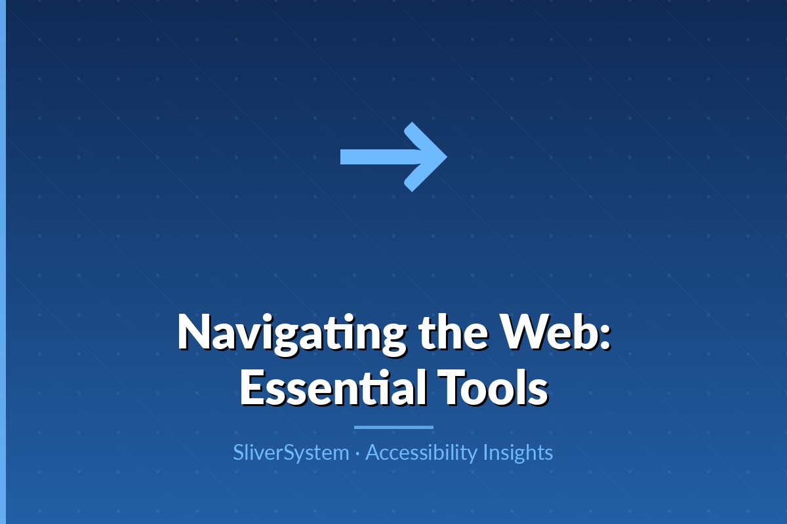

A practical framework for making every keypress predictable, visible, and efficient.

Keyboard access is critical for users with motor disabilities, repetitive strain injuries, tremors, and temporary injuries. It is also important for screen reader users, power users, and anyone who prefers faster navigation. If a site requires fine mouse movement or drag-only interactions, many users are blocked immediately. Keyboard-first design removes this dependency and improves efficiency for everyone.
Focus order should follow a meaningful reading and interaction sequence. Users should move through navigation, main content, forms, and controls in a predictable path. Avoid inserting focusable elements that are visually hidden or out of context. Complex layouts with sidebars and modal dialogs need explicit focus management so users always know where they are and what action comes next.
A visible focus indicator is one of the most important accessibility signals. Removing outlines without replacing them creates major usability failures. Use strong contrast and clear shapes so focused elements stand out on all themes. For custom components, ensure the same focus treatment appears on links, buttons, tabs, menus, and cards. Consistency reduces cognitive load and lowers navigation errors.
Interactive patterns such as dropdowns, accordions, tablists, and carousels require full keyboard behavior, not just Tab support. Add arrow key navigation where expected, Esc to close overlays, and Enter or Space to activate controls. Announce component state changes to assistive technology. Test each component in isolation and in-page context to catch focus traps and dead ends early.
Create keyboard test scenarios for every release: complete checkout, submit forms, switch tabs, and dismiss dialogs without a mouse. Include error-state testing because validation messages often break focus flow. Track failures in a shared accessibility backlog and assign ownership for fixes. Keyboard usability should be part of definition-of-done, not an optional QA pass.
Accessible products are built when design, engineering, content, and research teams treat inclusion as a shared responsibility from day one.